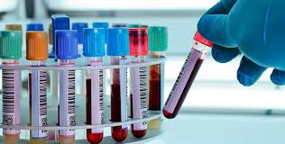

Nos importamos com sua saúde


.jpg)

Seja bem-vindo ao Portal de Exames Médicos, sua plataforma confiável para agendar exames médicos laboratoriais e acessar facilmente os resultados. Aqui, nossa prioridade é fornecer a você uma experiência tranquila e conveniente, onde você pode cuidar da sua saúde com facilidade.
Na seção 'Preencha os Dados', você pode inserir as informações dos seus exames médicos para acessar os resultados de maneira prática e eficiente. Mantenha-se atualizado sobre sua saúde com facilidade, utilizando nosso sistema intuitivo para visualizar e interpretar seus dados de saúde.
Após realizar seus exames, você pode acessar os resultados de maneira rápida e segura através do nosso portal. Não há necessidade de esperar ou ligar para obter seus resultados. Basta fazer login em sua conta e ter acesso imediato às informações de saúde mais recentes.
Em 'Dicas de Saúde', oferecemos conselhos valiosos para ajudar você a manter um estilo de vida saudável. Desde dicas nutricionais até sugestões para melhorar sua rotina de exercícios, cada sugestão é projetada para promover seu bem-estar geral. Explore nossas recomendações e comece a transformar sua saúde hoje mesmo.